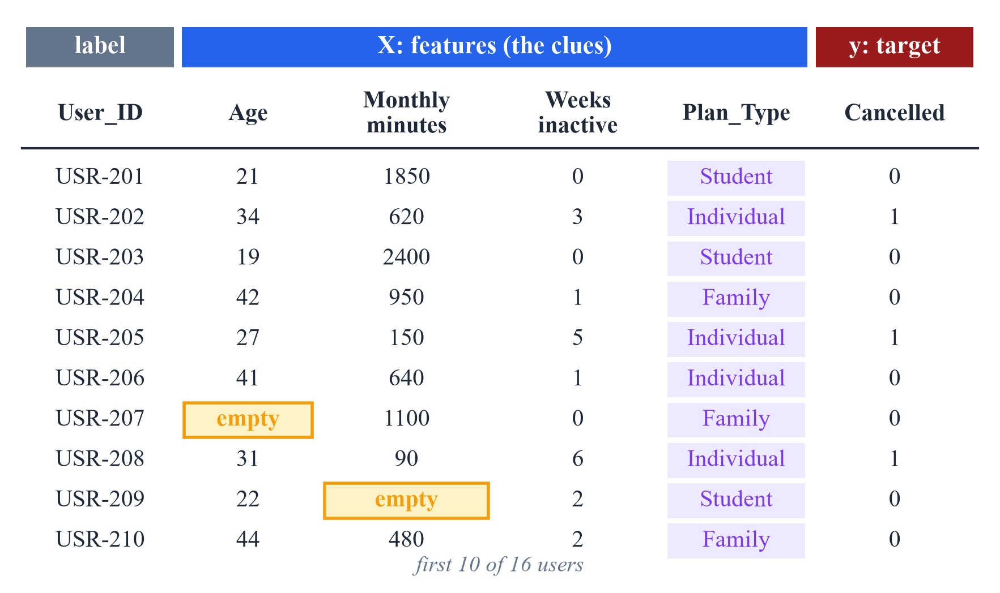
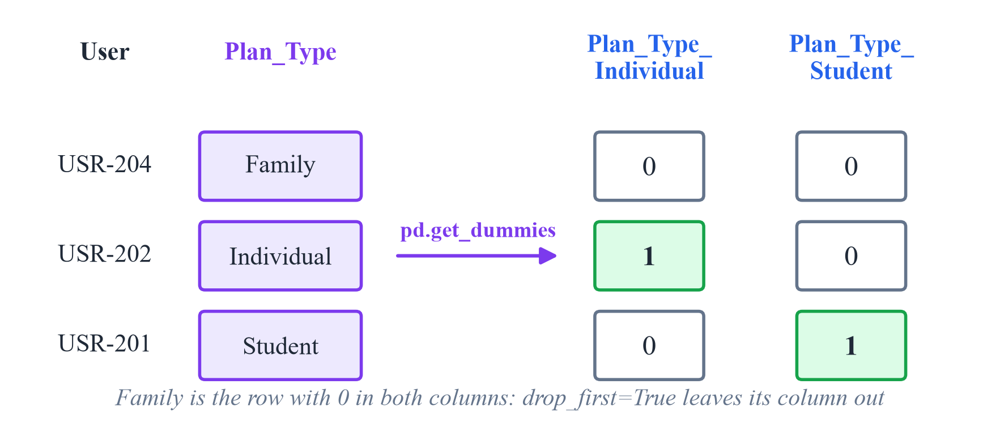
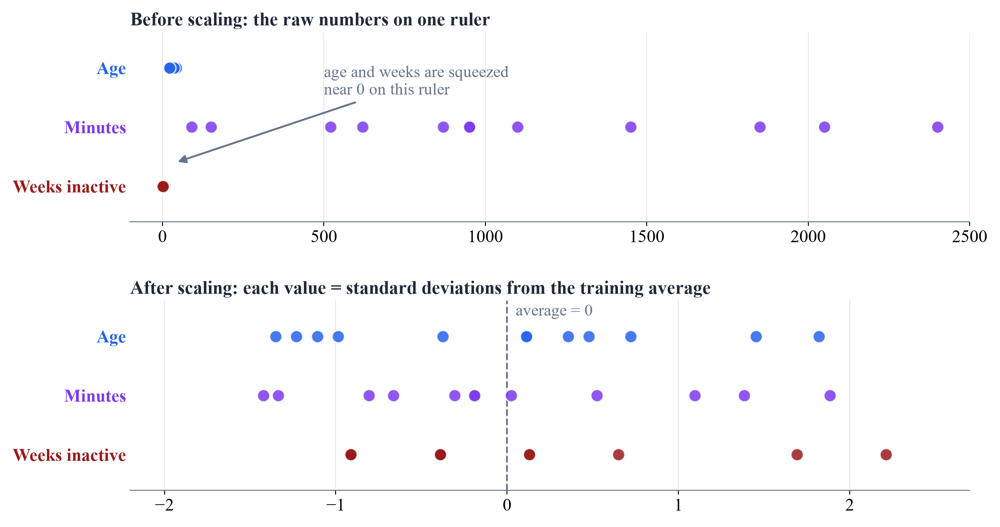
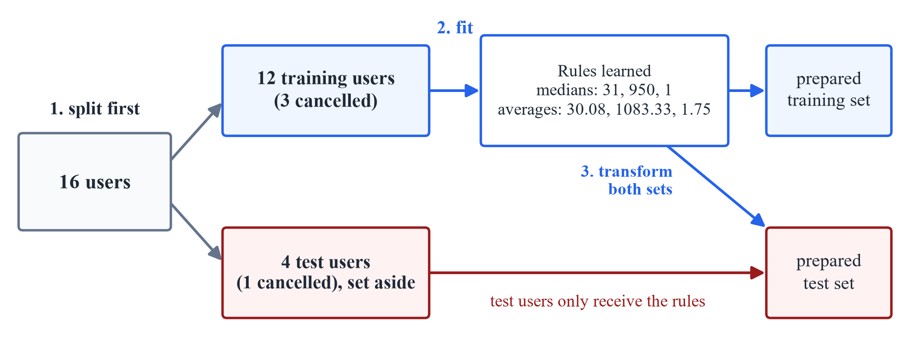
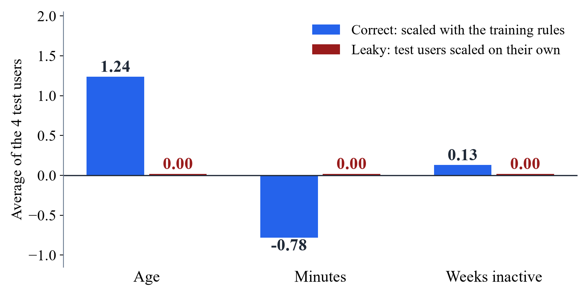
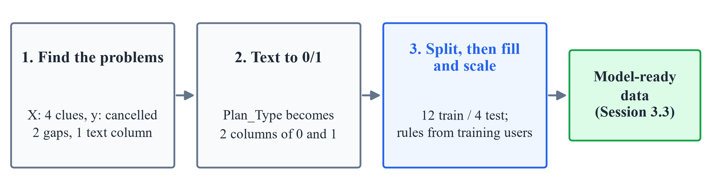

could not convert string to float: 'Student' and Input X contains NaN2,400, weeks only to 6Today: the result first, then the three steps that got it
| Problem | Raw table | Prepared table |
|---|---|---|
| Text columns | 1 (Plan_Type) | 0: two 0/1 columns |
| Empty cells | 2 | 0 |
| Units | minutes 90-2,400; weeks 0-6 | average 0, spread 1 (training users) |
| Fair test | none | 4 users set aside first |
1. Only numbers, no gaps, one common scale.
2. All rules come from the 12 training users, so the test shows a real difference: test users are older (+1.24) and listen less (-0.78).
| Column | Role | Why |
|---|---|---|
Age_Years_Count, Monthly_Minutes_Count, Weeks_Inactive_Count, Plan_Type | features X: the clues | known about the user today |
Cancelled_Binary | target y: the answer | 1 = cancelled next month, 0 = stayed |
User_ID | neither | a label; it says nothing about the user |
X. The model reads the answer, scores perfectly in testing, and is useless next month.| Tool | What it does | An everyday version |
|---|---|---|
| Imputation | fills an empty cell with the column's median (middle value) | a blank age on a form: assume a typical age |
| One-hot encoding | one text column → one 0/1 column per category | a checkbox: "Student plan? yes = 1" |
| Standardization | value → distance from the average, in standard deviations | "2 points above the class average" |
| Train/test split | keeps some rows aside for the final test | an exam with questions you have not practiced |
.fit() learns (a median, an average); .transform() applies it. Fit on training rows only; transform both. Breaking this rule is data leakage.session_03_02_dataset.csv: 16 music app users, one row per user; 4 cancelledUser_ID (label), Age_Years_Count, Monthly_Minutes_Count, Weeks_Inactive_Count (as in Session 3.1), Plan_TypeCancelled_Binary: 1 = cancelled next month, 0 = stayedUSR-207 skipped the age question; USR-209's listening log was lostpip install scikit-learn in the Terminal.# 1. Input: 16 users of the music app, labeled by their User_ID import pandas as pd df = pd.read_csv("data/session_03_02_dataset.csv", index_col="User_ID") # 2. Process: the clues (X) and the answer to predict (y) X = df.drop(columns=["Cancelled_Binary"]) y = df["Cancelled_Binary"] # 3. Output: the gaps, the text column, and the range of each number column print("Gaps per column:\n", X.isnull().sum()) print(X["Plan_Type"].value_counts().sort_index()) print(X.describe().loc[["min", "max"]])
index_col="User_ID": the ID is a row label, never a clueisnull().sum(): gaps per column; describe(): min and maxQuick Check: y.value_counts(normalize=True): 0.75 stayed, 0.25 cancelled

Plan_Type → 0/1 columns (Step 2)2400, weeks up to 6 → one scale (Step 3)# 1. Input: the clues of the 16 users import pandas as pd df = pd.read_csv("data/session_03_02_dataset.csv", index_col="User_ID") X = df.drop(columns=["Cancelled_Binary"]) # 2. Process: one 0/1 column per plan, except the first X = pd.get_dummies(X, columns=["Plan_Type"], drop_first=True, dtype=int) # 3. Output: the new column names, and the plan columns of three users print(X.columns.tolist()) plans = X[["Plan_Type_Individual", "Plan_Type_Student"]] print(df[["Plan_Type"]].join(plans).head(3))
get_dummies(): one 0/1 column per planFamily, Individual, Student; drop_first=True leaves out FamilyQuick Check: drop_first=False adds Plan_Type_Family

# 1. Input: encode, then split before learning anything import pandas as pd from sklearn.model_selection import train_test_split from sklearn.impute import SimpleImputer from sklearn.preprocessing import StandardScaler df = pd.read_csv("data/session_03_02_dataset.csv", index_col="User_ID") X = pd.get_dummies(df.drop(columns=["Cancelled_Binary"]), columns=["Plan_Type"], drop_first=True, dtype=int) y = df["Cancelled_Binary"] X_train, X_test, y_train, y_test = train_test_split( X, y, test_size=0.25, random_state=42, stratify=y) # 2. Process: fill and scale the number columns with training rules numbers = ["Age_Years_Count", "Monthly_Minutes_Count", "Weeks_Inactive_Count"] imputer = SimpleImputer(strategy="median") X_train[numbers] = imputer.fit_transform(X_train[numbers]) X_test[numbers] = imputer.transform(X_test[numbers]) scaler = StandardScaler() X_train[numbers] = scaler.fit_transform(X_train[numbers]) X_test[numbers] = scaler.transform(X_test[numbers]) # 3. Output: the split, the training rules, and the test users print("Train rows:", len(X_train), "| Test rows:", len(X_test)) print("Medians from training rows:", imputer.statistics_.tolist()) print(X_test[numbers].round(2))
stratify=y: 25% cancelled in both setsfit_transform on training rows; transform on test rowsQuick Check: scaler.mean_ is [30.08, 1083.33, 1.75]

USR-210 is 44; training average 30.08, standard deviation 8.20: (44 - 30.08) / 8.20 = 1.70 standard deviations above average.

scaler.fit_transform(X_test[numbers]) learns the test users' own average0: they look "average"
X_train and scores it on X_testfit on the training rows, transform both sets.Goal: run the preparation of Step 3, then check the result four ways
Script: YourName_S32_check.py
0? Why does the test set hold 1 cancel?Gaps left: 0; averages 0.0; spreads 1.0; Cancelled in train: 3 | in test: 1Goal: add one clue, read a common error, and see what leakage hides
Script: YourName_S32_practice.py
Inactive_3_Plus_Flag (3 or more weeks, from Session 3.1) and print pd.crosstab().transform() on an unfitted StandardScaler(): read the NotFittedError with the AI Chat[1.24, -0.78, 0.13] vs leaky [0.0, 0.0, 0.0]Goal: one object that fills, scales, and encodes, fitted on the training users
Script: YourName_S32_pipeline.py
Pipeline (median, then scale) for numbers + OneHotEncoder(handle_unknown="ignore") in a ColumnTransformer300 minutes, 4 weeks, plan "Duo"0.11, -1.12, 1.17, 0.0, 0.0, 0.0, with no crash